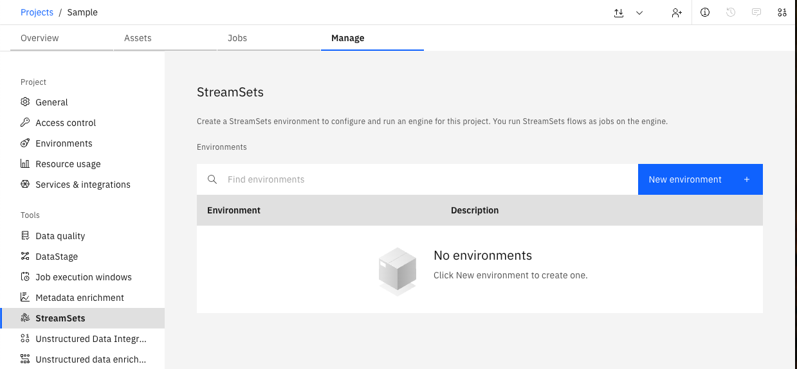
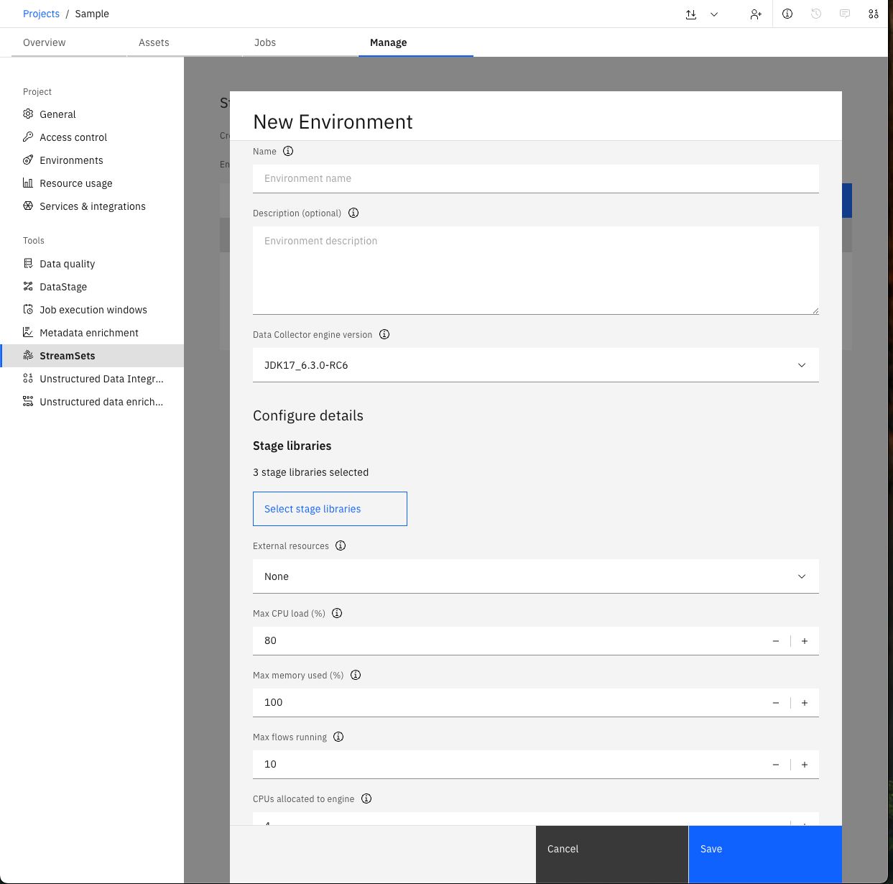
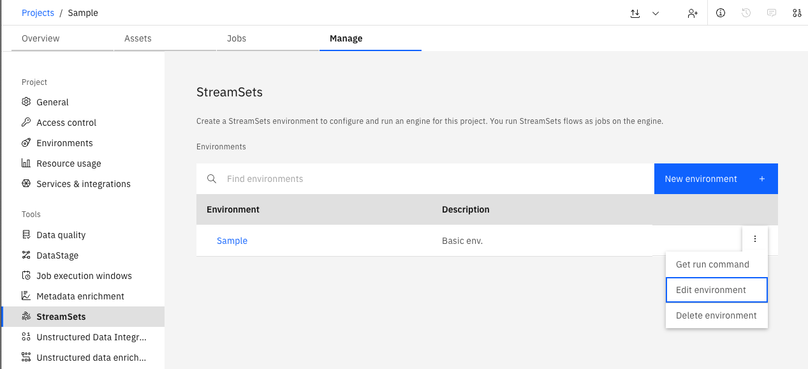
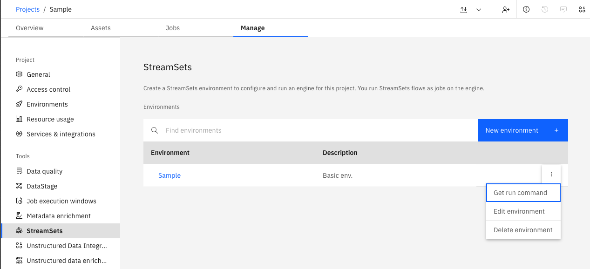
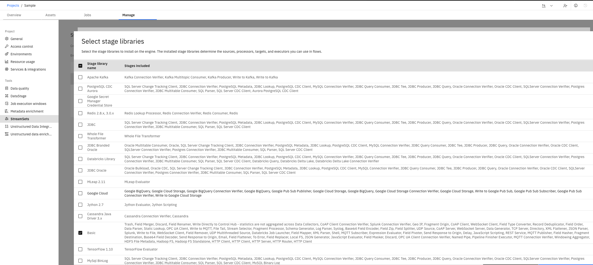

Environments#
An environment defines the execution context for running flows. It specifies the engine to be used, the libraries to be installed, and additional runtime parameters such as the number of CPU cores, memory allocation, and the maximum number of concurrent flow runs.
When configuring an environment, a command is generated that can be used to launch the environment. This command typically runs a Docker container with the selected engine version, all required libraries, and the specified parameters.
Creating an Environment#
In the UI, you can create a new Environment by navigating to Manage -> StreamSets -> New environment.
{kind=link}
You will be prompted to provide a Name and select a Data Collector engine version, and other additional configuration options.
{kind=link}
In the SDK, you can create an environment from a Project object using the
Project.create_environment() method.
At a minimum, you must provide the name and engine_version parameters.
All other parameters are optional and will be populated with default values if not specified.
This method returns a Environment object.
>>> env = project.create_environment(
... name='Sample',
... # Optional parameters - see API Reference for more optional parameters
... engine_version=engine_version,
... description='Basic env.',
... stage_libs=[
... 'streamsets-datacollector-basic-lib',
... 'streamsets-datacollector-dataformats-lib',
... 'streamsets-datacollector-dev-lib'
... ],
... cpus_to_allocate=2,
... )
>>> env
Environment(name='Sample', description='Basic env.', ...)
Note
Retrieving an Existing Environment#
Environments can be retrieved through a Project object.
You can access all environments associated with a project using the
Project.environments property.
You can also retrieve single environment using the Project.environments.get() method,
which requires the environment_id parameter.
>>> # Get all environments associated with the project
>>> project.environments
[...Environment(name='Sample', description='Basic env.', ...)...]
>>> # Get a single environment by its id
>>> project.environments.get(environment_id=env.environment_id)
Environment(name='Sample', description='Basic env.', ...)
Modifying an Environment#
In the UI, you can update or delete an existing Environment by navigating to the Manage -> StreamSets.
{kind=link}
Updating an Environment#
Similar to environment creation, environment can also be updated using the Project object.
First, modify properties of the environment instance, then update it using the
Project.update_environment() method.
>>> # Modify environment settings
>>> env.max_memory_used = 80
>>> env.stage_libs.append('streamsets-datacollector-aws-lib')
>>> # Update the environment on the platform
>>> project.update_environment(env)
<Response [200]>
>>> env = project.environments.get(environment_id=env.environment_id)
>>> env.stage_libs
['streamsets-datacollector-basic-lib', 'streamsets-datacollector-dataformats-lib', 'streamsets-datacollector-dev-lib', 'streamsets-datacollector-aws-lib']
Retrieving the Engine Installation Command#
To start and run the Engine defined by an Environment, you’ll need to retrieve the installation command for that Environment and execute it from the machine where you want the Engine to run.
In the UI, you can retrieve the run command by navigating to the Manage -> StreamSets.
{kind=link}
You can retrieve the run command via the Environment object by using
Environment.get_installation_command() method.
>>> env.get_installation_command(
... # Optional parameters
... pretty=False,
... foreground=True
... )
'docker run -d --restart on-failure --cpus=4.0 --hostname "$(hostname)" -p 18630:18630 ...'
Note
Please be aware that the installation command you retrieve from the Environment requires the SSET_API_KEY environment variable to be set for the user executing the command.
The environment variable should contain the API key you generated for authenticating with the watsonx.data integration platform.
Deleting an Environments#
To remove a single environment, use the
Project.delete_environment() method.
The delete method returns an API response, which you can insepct to verify the status code.
>>> project.delete_environment(env)
<Response [200]>
To remove multiple environments at once, use the
Project.delete_environments() method.
This method accepts any number of Environment instances and returns a single HTTP response.
>>> project.delete_environments(env1, env2, env3)
<Response [200]>
Retrieving Available Engine Versions#
To view the list of available Engine versions, use the
Platform.available_engine_versions property.
This returns a list of Engine version names that can be used when configuring an Environment.
>>> platform.available_engine_versions
[...'JDK17_6.3.0'...]
Retrieving Engine Version Details#
In the UI, you can view the list of libraries supported by a specific Engine version during Environment configuration:
{kind=link}
In the SDK, to retrieve the list of libraries supported by a given Engine version, use the
Platform.get_engine_version_info() method.
This method takes the engine version name as an argument and returns detailed information about that version, including its supported libraries.
>>> engine_info = platform.get_engine_version_info('JDK17_6.3.0')
>>> engine_info
{'engine_version_id': 'JDK17_6.3.0', ...'engine_type': 'data_collector', 'stage_libs': [...]...}
>>> # To see all stage library IDs that can be used in environment.stage_libs
>>> [lib['stage_lib_id'] for lib in engine_info.get('stage_libs')]
[...'streamsets-datacollector-aws-lib', 'streamsets-datacollector-apache-kafka-lib'...]